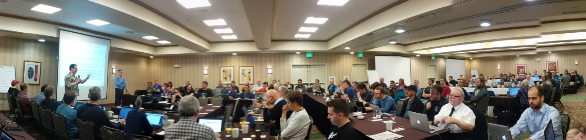

C++ завтра и послезавтра
Михаил Мальцев
Представиться.
"Завтра и послезавтра" означает ближайшую версию (C++17) и дальнейшее
развитие.
Провести опрос: кто из присутствующих использует C++ в продакшене?
В докладе много ссылок, HTML-версию слайдов я отправлю через рассылку
О чём я буду рассказывать
Работа комитета и стандарт C++17
Технические спецификации
Дальнейшее развитие, С++2a
Россия в комитете C++
Комитет WG21

Язык C++ разрабатывается комитетом, в котором участвует ~100 человек.
Встречи комитета
Встречи комитета обычно проходят 3 раза в год
На каждой встрече рассматриваются предложения (proposal). Обязательное условие рассмотрения
— личное присутствие на встрече. Полный список предложений обширен (около 500 за 2016
год). Читать proposal-ы полезно, если вы хотите узнать обоснование тех или иных решений.
Обзор C++17
Нереалистичные ожидания:
Что попало в стандарт (доклад Alisdair Meredith на CppCon 2016):
Планировалось разделить выпускаемые релизы на major (как C++11) и minor (как C++14), но
от этой идеи отказались.
Презентации Страуструпа (и отчасти Саттера), к сожалению, вызвали у пользователей
очень нереалистичные ожидания от следующего стандарта. К примеру, Бьярне ожидал, что
в C++17 попадут концепты, модули, сопрограммы и интервалы.
На самом деле в C++17 попало довольно много фич. Большинство — в стандартную
библиотеку.
Двухчасовой доклад Alisdair-а — краткий обзор всех новых возможностей стандарта.
Поскольку я хочу поговорить не только о C++17, но и будущих версиях, мы рассмотрим лишь
некоторые из возможностей.
Список изменений, вошедших в стандарт:
В том числе в стандартную библиотеку:
Полный список изменений проще всего позаимствовать у разработчиков компиляторов.
Я сосредоточусь на GCC и Clang.
Изменения в языке
38 предложений (36 фич)
GCC Clang
P0217R3 Structured bindings
7
3.9
std::map<std::string, int> get_map();
for (const auto& [k, v] : get_map())
// ...
эквивалентно
for (auto&& __kv : get_map()) {
const auto& k = std::get<0>(__kv);
const auto& v = std::get<1>(__kv);
{
// ...
}
}
Рассказать про обозначения. Ближайшая версия GCC — 7.1, будет скорее всего выпущена
в марте 2017, а Clang — 4.0, в феврале. У GCC более длинный релизный цикл, поэтому
большинство возможностей C++17 будут в следующем релизе, тогда как в Clang доступны уже
в 3.9.
Structured bindinds — зачатки pattern matching (ср. с ML, Scala, Rust).
Напоминает множественно присваивание в Python.
Здесь показана версия для класса, поддеривающего протокол tuple. Компилятор пытается найти
у класса метод tuple_size (или подходящую свбодную функцию tuple_size). Если ему это
удаётся, используются шалонные методы (или функции) get.
Вместо const auto& можно написать просто auto (тогда данные будут
копироваться) или, например, auto& .
Поддерживается работа со структурами и массивами:
struct foo {
int i;
char c;
};
foo f{1, 'a'};
auto& [ii, cc] = f;
Рекурсивная версия — в C++Next.
GCC Clang
P0091R3 Template argument deduction for class templates
7
-
std::pair p(2, 4.5); // выводится std::pair<int, double>
std::vector v(begin_iter, end_iter); // выводится std::vector<...>
Deduction guide:
template<typename Iter> vector(Iter b, Iter e)
-> vector<typename iterator_traits<Iter>::value_type>;
Вывод аргументов шаблонов для шаблонов классов — ещё одна относительно важная
возможность. Он позволит выводить аргументы шаблона из типов параметров конструктора и
избавиться от костылей типа make_pair и make_tuple .
Иногда связь между типами нетривиальна, как в примере в созданием вектора из пары
итераторов. Для этого случая используются explicit deduction guides.
По поводу этой фичи было сломано много копий в LEWG.
GCC Clang
P0292R2 constexpr if-statements
7
3.9
template<typename T, typename ... Rest>
void g(T&& p, Rest&& ...rs) {
// ... обработать p
if constexpr (sizeof...(rs) > 0)
g(rs...); // при пустом списке аргументов эта часть
// не инстанциируется
}
constexpr if полезен при написании сложных шаблонов
Допускается только в телах функций, т.е. с помощью constexpr if
не получится "выключать" отдельные поля классов. Такое предложение рассматривалось (и
называлось static_if), но было отвергнуто.
GCC Clang
P0305R1 Selection statements with initializer
7
3.9
Было:
{
auto p = m.try_emplace(key, value);
if (!p.second) {
FATAL("Element already registered");
} else {
process(p.second);
}
}
Стало:
if (auto p = m.try_emplace(key, value); !p.second ) {
FATAL("Element already registered");
} else {
process(p.second);
}
GCC Clang
P0145R3 Stricter expression evaluation order
7
4.0
#include <map>
int main() {
std::map<int, int> m;
m[0] = m.size();
}
Зафиксирован порядок вычисления:
a.b , a->b , a->*b , a[b] — слева направоa << b , a >> b — слева направоb = a , b += a , b -= a , … — справа налево
Порядок вычисления операндов у большинства операторов и а также у аргументов функций,
как известно unsequenced.
Было предложение вычислять аргументы функций слева направо, но оно было отвергнуто.
В calling convention x86-64 в Linux те агрументы, которые передаются на стеке, передаются
в порядке срава налево и поэтому GCC также вычисляет аргументы "справа налево".
В результат на SPEC CPU2006 изменение порядка на противоположный вызвал просадку ~2% на одном
из бенчмарков.
Порядок зафиксировали для постфиксных выражений, сдвигов и присваиваний.
GCC Clang
P0188R1 [[fallthrough]] attribute
7
3.9
switch (cond) {
case 0:
case 1:
foo(1); [[fallthrough]];
case 2:
bar(2);
// falls thru
case 3:
baz(3); // Warning
case 4:
quax(4);
break;
// ...
}
g++ test.cc -Wimplicit-fallthrough=3
Разработчик с помощью атрибута пометить блоки в операторе switch, которые не
заканчиваются break-ом. Комипялтор будет предупредждать в остальных случаях, если задана
соотвутствующая опция
В GCC реализовали разбор комментариев. В зависимости от значения опции разные
комментарии могут считаться эквивалентами [[fallthrough]] .
-Wextra подразумевает -Wimplicit-fallthrough=3 .
Стандартизация существующей практики
GCC Clang
P0189R1 [[nodiscard]] attribute
7
3.9
P0212R1 [[maybe_unused]] attribute
7
3.9
P0245R1 Hexadecimal floating literals for C++
3.0
+
P0061R1 __has_include for C++17
5
+
Стандартизованы некоторые расширения компиляторов. nodiscard — аналог
warn_unused_result в GCC, maybe_unused — аналог unused .
__has_include — расширение Clang, неплохое дополнение в feature testing
macros.
Удалено из стандарта
GCC Clang
N4086 Removing trigraphs??!
5
3.5
P0001R1 Remove deprecated register storage class
7
3.8
P0002R1 Remove deprecated bool increment
7
3.8
P0003R5 Removing deprecated dynamic exception specifications
7
4.0
Некоторые возможности, ранее объявленные как deprecated, удалены из стандарта. Впрочем,
стандарт разрешает разработчикам компиляторов поддерживать их в качестве расширений.
register storage class был актуален со старыми компиляторыми, в которых алгоритмы
выделения регистров давали плохой результат без подсказок.
exception specifications — разрешены пустые списки типов исключений,
аналог noexcept
Изменения в стандартной библиотеке
83 предложения
libstdc++ libc++
P0218R1 Adopt the File System TS for C++17
-
-
Основные функции:
работа с путями
перечисление файлов в директории
создание директорий и ссылок
копирование и перемещение файлов
запрос свойств файлов, директорий и ФС
запрос и изменение прав доступа
File System TS во многом аналогчно Boost Filesystem. В отличие от всей остальной
стандартной библиотеки, большинство функций имеют дополнительную noexcept-версию,
возвращающую код ошибки по ссылке.
Основано на стандарте POSIX.
Входит в GCC 5.3 (experimental).
std::variant
libstdc++ libc++
P0088R3 Variant: a type-safe union for C++17
7
4.0
std::variant<int, float> v;
v = 12;
std::cout << std::get<int>(v);
<< std::get<0>(v);
// вызовет std::bad_variant_access
std::cout << std::get<float>(v);
v.index(); // 0
std::get_if<float>(v); // nullptr
libstdc++ libc++
P0220R1 Adopt Library Fundamentals V1 TS Components for C++17
7
4.0
optional any string_view полиморфные аллокаторы
Помимо перечисленного в Lib Fundamentals входят алгоритмы поиска подстроки
(Бойера-Мура и Бойера-Мура-Хорспула) и псевдослучайных выборок (sampling), а также
функция apply, позволяющая распаковать тупл и вызвать функцию с элементами тупла в
качестве параметров.
std::optional
std::optional<some_class> compute();
auto opt = compute();
if (opt)
opt->do_something();
// Или:
if (opt.has_value())
opt.value().do_something();
std::any
std::any val{"Hello"s};
auto& str_val = std::any_cast<std::string>(val); // OK
// int_val == nullptr
const int *int_val = std::any_cast<int>(&val);
// исключение std::bad_any_cast
long long_val = std::any_cast<long>(val);
Тип any удобен для хранения разнородных элементов в контейнере, например для
создания property map.
std::string_view Также известен как boost::string_ref .
Упрощенно string_view — это
class string_view {
const char* m_data;
size_t m_length;
public:
// ...
};
+ большинство методов std::string
Интеграция std::string_view
libstdc++ libc++
P0254R2 Integrating std::string_view and std::string
7
4.0
P0392R0 Adapting string_view by filesystem paths
-
4.0
P0403R1 Literal suffixes for basic_string_view
-
-
P0426R1 Constexpr for std::char_traits
-
-
Технические спецификации
О технических спецификациях
How will all of the above [Networking TS, Concurrency TS, Coroutines] work
together?
Jonathan Wakely: They might not. The point of publishing each piece of work as a
separate TS is to get implementation experience and user feedback before anything is added to
the standard and set in stone. The approach in one TS doesn't necessarily have to agree or
interoperate with the approach in another TS. They are experimental ideas and are not intended
to form a single, cohesive design.
Это цитата Джонатана Уэйкли, главного разработчика libstdc++. "Могут и не заработать.
Смысл публикации ТС по отдельности в том, чтобы фидбэк от их использования до того как
добавить их в стандарт навсегда. Подходы в одной ТС не всегда согласованы с подходами
в других ТС. Это экспериментальные идеи, а не часть единого замысла."
Модули
Проблемы с текущим механизмом include-файлов:
скорость компиляции
хрупкость из-за макросов
сложности для инструментария
Существуют экспериментальные реализации в Clang и MSVC. Google использует свою реализацию
в production и дают фидбэк.
По сути, модуль — это бинарное представление AST, схожее с precompiled header.
Модули, пример
// foo.ixx -> M.ifc, foo.obj
module M;
namespace ns {
export int foo(int x) {
return 2 + x;
}
}
// main.cpp -> main.obj
import M;
int main() {
ns::foo(5);
return 0;
}
Транзакционная память
N4514 C++ Extensions for Transactional Memory
class account {
public:
void deposit(int amount); // пополнить
void withdraw(int amount); // списать
int balance() const;
// ...
};
bool transfer(account& from, account& to, int amount) {
if (from.balance() >= amount) {
from.withdraw(amount);
to.deposit(amount);
return true;
} else {
return false;
}
}
Добавляются блоки
synchronized atomic_noexcept atomic_cancel atomic_commit
и ключевое слово transaction_safe .
Исправленный пример
class account {
public:
void deposit(int amount) transaction_safe ;
void withdraw(int amount) transaction_safe ;
int balance() const transaction_safe ;
// ...
};
bool transfer(account& from, account& to, int amount) {
atomic_noexcept {
if (from.balance() >= amount) {
from.withdraw(amount);
to.deposit(amount);
return true;
} else {
return false;
}
}
}
synchronized и atomic блоки выполняются атомарно. atomic_* различаются обработкой
исключений:
noexcept вызывает std::abortcommit применяет и завершает транзакциюcancel отменяет транзакцию
Внтури атомарного блока разрешается вызывать только transaction_safe -функции,
в т.ч. выделение и освобождение памяти. Запрещается ввод-вывод
Реализовано в GCC (начиная с 4.7). STM+HTM.
synchronized выполняет код под мьютексом
Сопрограммы
generator hello() {
for (auto ch : "Hello, ")
co_yield ch;
for (auto ch : "world")
co_yield ch;
}
int main() {
for (char ch : hello())
cout << ch;
}
Три новых ключевых слова: co_await , co_yield , co_return .
Функция, в которой используется хотя бы одно из них называется корутиной.
Соблюдается бинарная совместимость с обычными функциями, т.е. вызов корутины — это
обычный вызов, указатель на корутину можно преобразовать в void* .
При вызове создаётся объект (side stack), в котором будут храниться локальные переменные
и PC. Память выделяется в куче либо (если возможно) в кадре вызывающей функции. Указатель
на этот объект сохраняется в дескрипторе, который возвращается из корутины. Через
дескриптор можно продолжить выполнение корутины и получить возвращаемое значение.
Concurrency
P0159R0 C++ Extensions for Concurrency
композиция future :
latch и barrier атомарные умные указатели
Networking
N4625 C++ Extensions for Networking
Предложение основано на библиотеке ASIO
асинхронная модель
буферы
сокеты и потоки
протоколы IP4, IP6, TCP, UDP
Концепты
template<typename R, typename T>
bool in(R const& range, T const& value);
int main() {
vector<string> v { ... };
in(v, 0);
}
g++ test.cc
Результат — сообщение об ошибке из 162 строк
template<Range R, typename T>
requires Equality_comparable<T, Value_type<R>>()
bool in(R const& range, T const& value);
int main() {
vector<string> v { ... };
in(v, 0);
}
g++ -fconcepts test.cc
In function 'int main()':
error: cannot call function 'bool in(const R&, const T&)'
in(v, 0);
^
note: constraints not satisfied
in(R const& range, T const& value)
^
note: concept Equality_comparable<Value_type<vector<string>>,
int>() was not satisfied
Концепты не меняют семантику программы, а только лишь описывают ограничения на
аргументы шаблонов
Добавляется синтаксис для описания концептов (наборов ограничений) и их применения
к аргументам шаблонов и типам переменных.
Интервалы
N4622
C++ Extensions for Ranges
Реализация:
Было:
std::vector<int> v = /* ... */;
std::sort(v.begin(), v.end());
Стало:
std::vector<int> v = /* ... */;
std::sort(v);
Подборка ссылок и примеры есть на гитхабе.
Несмотря на название, большая часть proposal-а посвящена интеграции концептов в
стандартную библиотеку.
Интервал (range) это итератор и sentinel (частный случай: пара итераторов).
Библиотека range-v3 определяет 3 набора примитивов для работы интервалами: алгоритмы,
действия (action) и представления (view). В стандарт пока что предлагается включить
только алгоритмы.
Дальнейшее развитие
action — немедленные in-place преобразования
view — ленивые преобразования (возвращают новый интервал)
Пример (1² + 2² + … + 10²):
using namespace ranges;
int sum = accumulate(view::ints(1)
| view::transform([](int i){return i*i;})
| view::take(10), 0);
C++Next
Рабочие названия — C++Next, C++2a
Статическая интроспекция (reflection)
P0385R1 Static reflection. Rationale, design and evolution.P0194R2 Static reflection
Предоставляет возможность:
узнать имена и типы полей структуры
получить строковое представление имени типа
До настоящего времени спецификация разрабатывалась отдельной группой в комитете. На
следующей встрече в Коне будет рассмотрена всем комитетом.
Добавлен синтаксис для получения мета-объекта для выражения. Метаобъект позволяет
итерироваться по полям классов и получать их свойства, а также получать имена
различных сущностей.
Всё работает в compile time
float foo = 42.f;
using foo_type = decltype(foo);
using meta_foo = reflexpr (foo);
Область применения:
сериализация
сравнение и хэширование объектов
логирование и отладка (pretty print)
ORM
В будущем планируется добавить генерацию кода по метаобъектам.
Имеется
(на базе Clang).
Операторы сравнения
P0221R2 Proposed wording for default comparisons, revision 4P0481R0 Bravely DefaultP0436R1 An Extensible Approach to Obtaining Selected Operators
Операторы сравнения, пример
struct date {
int year;
int month;
int day;
};
date d1 = /* ... */, d2 = /* ... */;
if (d1 > d2) {
// ...
} else if (d1 == d2) {
// ...
}
Открытые вопросы
opt-in vs opt-out
только unordered или unordered+ordered
генерировать ли x>=y из !(x<y) или
x>y || x==y
three-way comparison: int operator<=>
Контракты
P0380R1 A Contract Design
void queue::push(int elem)
[[ expects: !full() ]]
[[ ensures: !empty() ]]
{
// ...
[[ assert: is_ok() ]];
// ...
}
Контракты — предложение от Microsoft.
Осуществляют проверку инвариантов в runtime, т.е. усовершенствованная версия макроса
assert.
Могут использоваться совместно со статическим анализатором.
Оператор "точка"
P0416R1 Operator Dot
Аналогичен операторам * и -> .
template<class X>
class Ref {
public:
Ref(X& x) :p{&x} {}
X& operator. () { /* ... */ return *p; }
// …
private:
X* p;
};
X val;
Ref ref{val};
ref.foo(); // (r.operator.()).foo()
Унифицированный синтаксис вызова
Различия в синтаксисе вызова: x.foo() vs foo(x) .
Примеры унификации:
операторы: x + y вызывает x.operator+(y) либо
operator+(x,y)
range-based циклы: вызывается range.begin() либо begin(range)
Унифицированный синтаксис вызова, пример
struct S {
void foo(int);
};
void bar(const S&);
S s;
.foo(s, 1); // s.foo(1);
.s.foo(1); // s.foo(1);
.bar(s); // bar(s);
.s.bar(); // bar(s);
В первоначальной версии пытались переделать обычный вызов функции.
При использовании UFC в overload resolution участвуют как свободная функция, так и метод.
При прочих равных метод имеет приоритет.
Гетерогенные среды исполнения
P0363R0
Towards support for Heterogeneous Devices in C++ (Language aspects)P0362R0
Towards support for Heterogeneous Devices in C++ (Concurrency aspects)
Pattern matching
P0095R1 Pattern Matching and Language Variants
enum command_type { set_score, fire_missile, rotate };
struct command {
command_type type;
union {
std::size_t score;
double angle;
} data;
};
switch (cmd.type) {
case set_score:
stream << "Set the score to " << cmd.data.score; break;
case fire_missile:
stream << "Fire a missile"; break;
case rotate:
stream << "Rotate by " << cmd.data.angle << " degrees"; break;
}
Pattern matching, пример
lvariant command {
std::size_t set_score;
std::monostate fire_missile;
double rotate;
};
command cmd = command::set_score(10);
inspect (cmd) {
set_score value =>
stream << "Set the score to " << value;
fire_missile m =>
stream << "Fire a missile";
rotate degrees =>
stream << "Rotate by " << degrees << " degrees";
}
Pattern matching, открытые вопросы
Как задавать альтернативы:
Как получать доступ к данным (деконструкция)
Синтаксис inspect
Нужно больше constexpr
P0202R1
Add Constexpr Modifiers to Functions in <algorithm> and
<utility> HeadersP0415R0
Constexpr for std::complexP0426R1
Constexpr for std::char_traits
Работа с DLL
P0275R0
A Proposal to add Classes and Functions Required for Dynamic Library Load
Основные функции:
загрузка DLL (SO)
получение адреса символа по имени
проверка существования символа
Атрибут [[visible]]
P0276R0 A Proposal to add Attribute [[visible]]
Было:
#if MSVC
# define EXPORT __declspec(dllexport)
#else
# define EXPORT __attribute__((visibility("default")))
#endif
// Public interface
EXPORT bool grph_is_tree(const graph& g);
Стало:
[[visible]] bool grph_is_tree(const graph& g);
Компиляция:g++ -shared -fvisibility=hidden …
Мои предложения по улучшению C++
Intrinsic-функции для микробенчмарков
P0412R0 Benchmarking Primitives
Пример
#include <chrono>
#include <iostream>
double perform_computation(int);
void benchmark() {
using namespace std;
auto start = chrono::high_resolution_clock::now();
double answer = perform_computation(42);
auto delta = chrono::high_resolution_clock::now() - start;
cout << "The computation took " << delta.count() << " ns";
}
Предложение P0412R0
touch — помечает glvalue как "модифицированное"keep — помечает значение как "прочитанное"
Исправленный пример
#include <chrono>
#include <iostream>
#include <benchmark>
double perform_computation(int);
void benchmark() {
using namespace std;
auto start = chrono::high_resolution_clock::now();
int value = 42;
experimental::benchmark::touch(value);
double answer = perform_computation(value);
experimental::benchmark::keep(answer);
auto delta = chrono::high_resolution_clock::now() - start;
cout << "The computation took " << delta.count() << " ns";
}
P0457R0 String Prefix and Suffix Checking
Предагается добавить методы
к шаблонным классам
std::basic_string std::basic_string_view
P0458R0 Checking for Existence of an Element in Associative Containers
Было:
if (some_set.find(element) != some_set.end()) {
// ...
}
Стало:
if (some_set.contains(element) ) {
// ...
}
Планы на будущее
Включить в стандарт новые функции для форматного вывода a-la
fmtlib ,
Python ,
Rust :
uint32_t errc;
string_view msg;
// C-style
printf("Error 0x%08x: '%.*s'\n", errc,
(int)msg.size(), msg.data());
// iostream
cout << "Error 0x" << setw(8) << setfill('0') << ios::hex << errc
<< ": '" << msg << "'\n";
// fmtlib
fmt::print("Error 0x{:08x}: '{}'\n", errc, msg);